Internal · Do / Say / See runbook · CodeRabbit Field Engineering Enablement
Follow one finding: from Jira ticket to Deep Scan
A single feature, written by a coding agent, followed end to end: local review in the CLI and VS Code, the pull request review, Triage, Change Stack, QA Agent, the Security Deep Scan, and QA user journeys. The same two findings appear at every stop. Demo repository coderabbit-demo/mmani-demo-prs, PR #3, Jira story SC-10. Captured October 28, 2026, in light mode. Allow about 25 minutes plus questions.
Open with this "One Jira ticket, one coding agent, one branch. Let's follow two things the agent got wrong — a security hole and a money bug — from the developer's laptop all the way to the security team's scan. Same findings, every stop."
How to read this runbook
Take one stage at a time, top to bottom. Each step has three parts.
Column
What it holds
Do
What to click, type, or open, with the deep link.
Say
The talk track. Deliver it aloud.
See
What the audience sees: the finding, check, diagram, or graph.
Callouts: SECURITY marks where security rides in. WOW is the moment to slow down. Don't do this flags a trap.
The dashboard
1
Jira story · SC-10
1
Coding-agent PR · #3
2
Tracked findings · F1 + F2
8
Stops on the trail
The two findings we follow
ID
Finding
Where
Why it matters
F1 · SECURITY
SQL injection in the discount-code lookup (CWE-89)
services/orders/src/discounts.ts:20
Shopper-controlled text is interpolated into SQL. A crafted code can select any discount row.
F2 · BUG
Discount stored as a negative-quantity line and counted twice; fixed discounts are not capped
discounts.ts:29-30, :67-73, db.ts:17
Totals are wrong (a $65.00 cart nets $52.00 instead of $58.50, and a $15.00 cart nets −$25.00). The downstream fulfillment service breaks.
Order, discount, and data-access rules cited as Coding guidelines
PR #3 is open, unmerged, and labeled Demo - Do not merge, coding-agent, and showcase: all-in-one. The defects are intentional. The application is a demo storefront with synthetic data; never deploy it publicly.
Part I — The story: a ticket becomes a branch
STEP 1The developer receives SC-10
DoOpen SC-10. Scroll through Success criteria S1–S10 and the Acceptance criteria.
Say"Marketing wants promo codes for the autumn campaign. The ticket is precise: discounts live on the order, the net is never negative, codes are bound parameters. Our developer is busy, so they hand it to a coding agent."
SeeThe story with S1 Net never negative, S3 Lines unchanged, S7 No injectable SQL. These are the exact criteria the agent will miss.
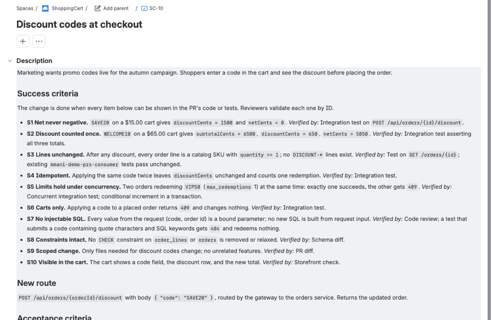
Jira SC-10 with numbered success criteria.
STEP 2The coding agent delivers a branch
DoShow the branch agent/discount-codes locally (git log --oneline -3). It was produced from the ticket by a coding agent.
Say"The agent wrote the route, the database table, the cart field, and eight passing tests. Everything is green. Before I push this anywhere, I want a second pair of eyes."
SeeA green test run: npm run check passes 17 tests. Passing tests are not proof — two of them assert the wrong totals.
Part II — The walkthrough
Stage 1 · Before the PR: CLI and VS Code
Setup: ~/projects/mmani-demo-prs on branch agent/discount-codes. The local branch demo/agent-base marks where the agent started, so the review shows only the agent's 13 files. Do not compare against main: it now holds the corrected reference implementation. Exact setup commands: Appendix C.
STEP 3Review committed changes with the CodeRabbit CLI
DoIn a terminal, run:
cd ~/projects/mmani-demo-prs
coderabbit review --committed --base demo/agent-base
To list the stored findings again: coderabbit review findings
Say"Code exists, so review it now — before a PR, before a teammate spends time on it. The same engine that reviews PRs runs on my laptop."
SeeF1 Injection (CWE-89) at discounts.ts:20: "Bind the discount code in the lookup." F2 "Limit the discount to the cart subtotal" (discounts.ts:59), and through the tests: "Do not assert a negative order total" and "Assert one deduction for the percent code" (5,200 should be 5,850).
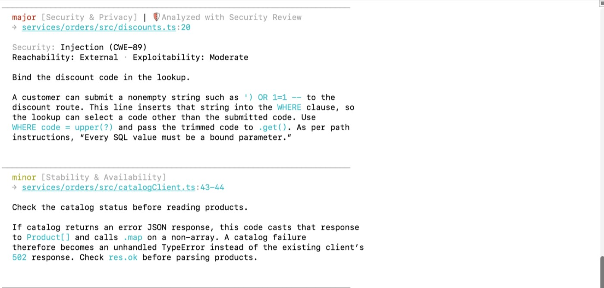
CLI: F1, the SQL injection in the discount lookup.
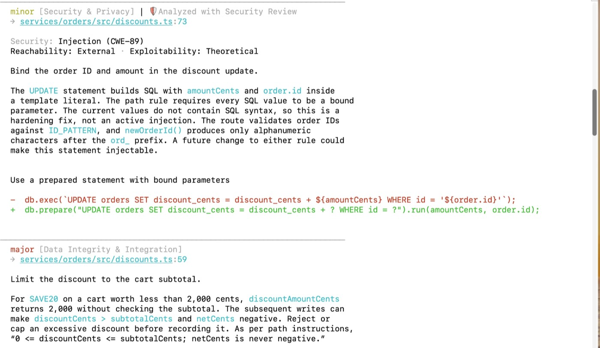
CLI: F2, the uncapped discount, plus the interpolated UPDATE at line 73.
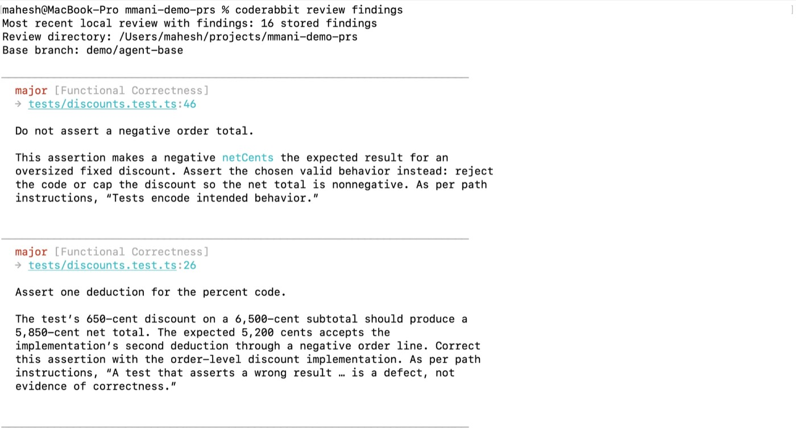
CLI: F2 through the agent's tests (negative total; double deduction).
STEP 4Inspect the same findings in VS Code
DoRun code ~/projects/mmani-demo-prs. In the CodeRabbit panel, set the base to demo/agent-base and the scope to Review committed changes. Open the SQL finding, then the discount-line finding.
Say"Same findings, in my editor, next to the code. I can apply the suggestion or hand it back to the agent with Fix with AI."
See18 findings and Fix all issues. F1 inline at line 20: "Bind the discount code in the lookup." F2 in Comments: "Clamp the discount to the eligible subtotal" (Ln 59) and "Do not subtract the discount through an order line" (Ln 67-72). Leave fixes unapplied.
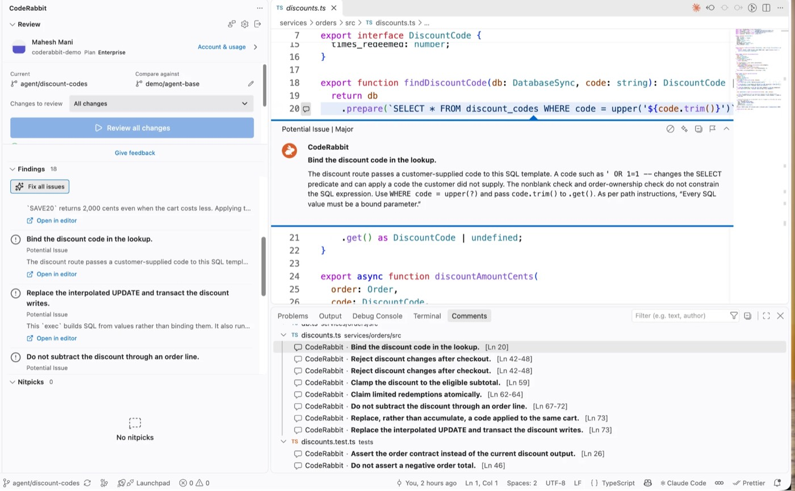
VS Code: F1 inline on the query, F2 in the findings and Comments lists.
Don't do this Do not apply fixes locally during a recorded demo. The PR stops below depend on the defects staying in place.
Stage 2 · The pull request
STEP 5Open PR #3 and read the summary
DoOpen PR #3. Point at the agent note, Jira link, and labels.
Say"The developer pushed the agent's branch anyway. Now the whole team sees it — and CodeRabbit reviews it with more context than my laptop had: Jira, our org standards, and the repos that depend on this service."
See"Implemented by a coding agent from Jira SC-10", labels coding-agent and Demo - Do not merge.
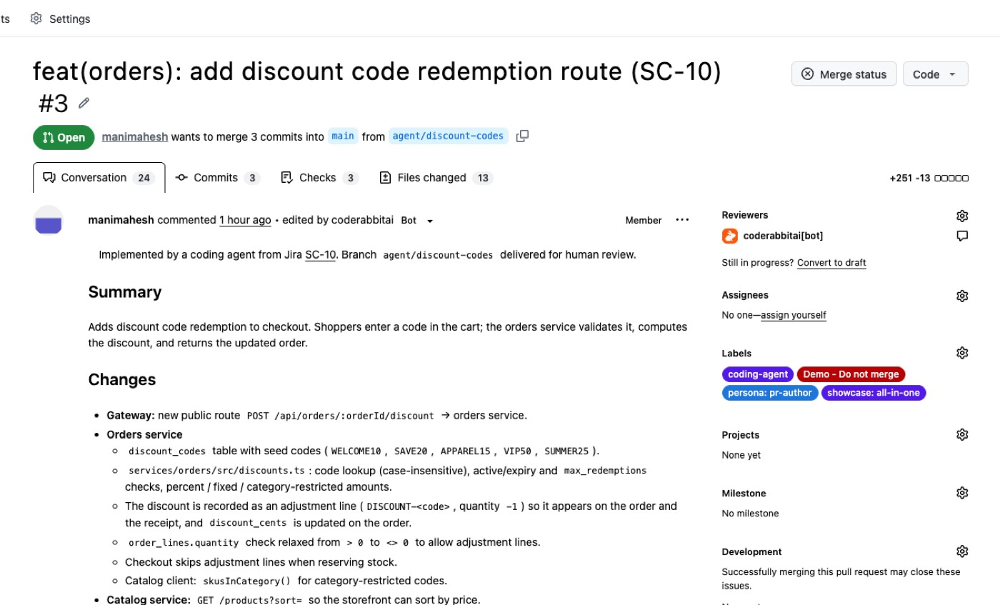
PR #3 header and description.
STEP 6Walkthrough and sequence diagram
DoIn the CodeRabbit summary comment, expand Walkthrough. Scroll to the changes table and the sequence diagram.
Say"Before any finding: here is what changed, grouped by purpose, and the request path from the cart through the gateway to the orders database. It also noticed product sorting, which nobody asked for."
Say"This is the same finding the CLI raised. Now it carries severity, category, reachability, exploitability, the CWE, a concrete exploit path, and the fix — bind the code as a parameter."
Say"The agent stored the discount twice — as a minus-one line and on the order — so a $65 cart with 10% off charges $52, not $58.50. And a $20 code on a $15 mug produces a negative total."
See"Subtract the discount only once" with the exact cents; "Cap a fixed discount at the eligible subtotal", Sources: Path instructions, Linked repositories.
Say"To make its design fit, the agent relaxed a database constraint. CodeRabbit read the fulfillment repo: those minus-one lines become pick tasks and increase stock, and finance books them as SKU revenue."
WOW Pause on the Sources line. One finding cites the org's coding standards (a separate repo), the path instructions in this repo's config, and the downstream repo it would break.
STEP 10Pre-merge checks against Jira
DoScroll to Pre-merge checks in the summary comment. Expand Success Criteria.
Say"CodeRabbit read SC-10 and graded the PR against every success criterion — with file and line evidence. It also caught the out-of-scope sorting feature."
See6 errors · 1 warning: Linked Issues, Out of Scope, Security Gate, Jira Work Item, Success Criteria (S1–S10 Not met), Order Invariants; Docstring Coverage warning.
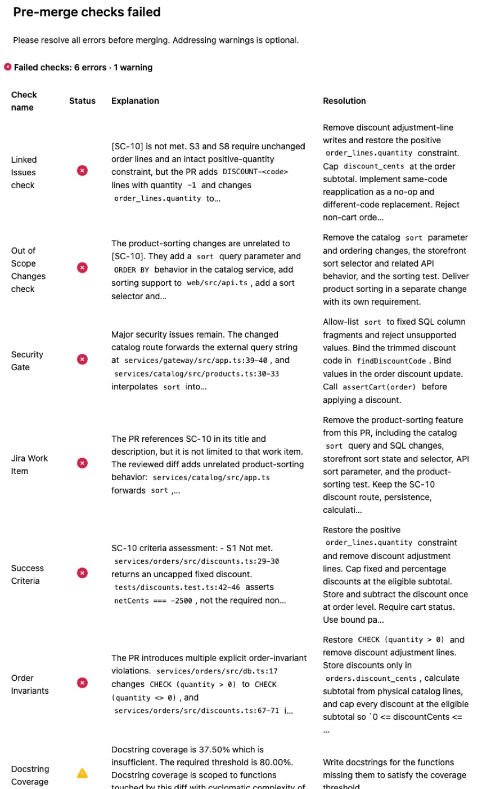
Pre-merge checks, including the Jira success-criteria gate.
Don't do this Do not describe green CI as proof. CI passes because the agent's tests assert the wrong totals. The checks and the findings are different signals.
Stage 3 · The reviewer: Triage and Change Stack
STEP 11Triage: where does PR #3 sit?
DoOpen Triage filtered to mmani-demo-prs. Find PR #3 in the P3 column.
Say"As a reviewer I see the whole queue, prioritized, with risk and blast radius on every card. PR #3 tells me another role owns the next action — the author has merge conflicts to fix."
SeeP1/P2/P3 columns; PR #3 card with Medium risk, High blast radius, and "Fix merge conflicts".
Say"Seven functional layers instead of thirteen files. Six of them carry findings, and the overview tells me what blocks the merge."
See7 layers, 13 files, 16 findings (2 Critical, 13 Major); merge blockers; the layer rail with per-layer finding counts.
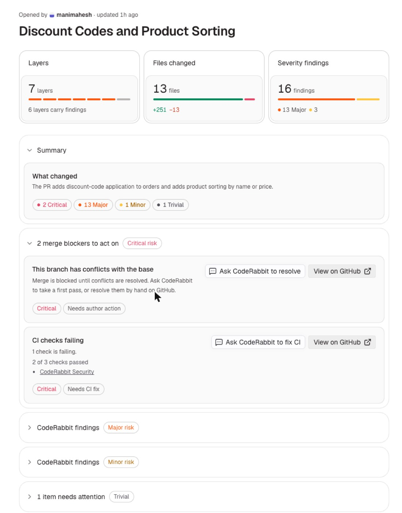
Change Stack overview.
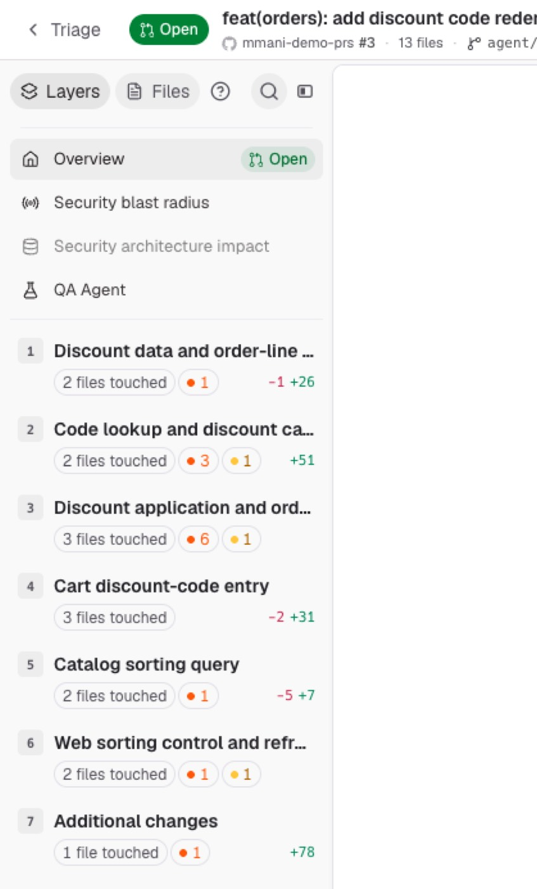
Layer rail.
STEP 13F1 The finding inside its layer
DoSelect layer 2, Code lookup and discount calculation.
Say"Same SQL injection, now in context: the lookup function, the interface it returns, and the finding pinned to line 20."
SeeThe layer summary, the diff of discounts.ts, and F1 inline with its CWE and fix.
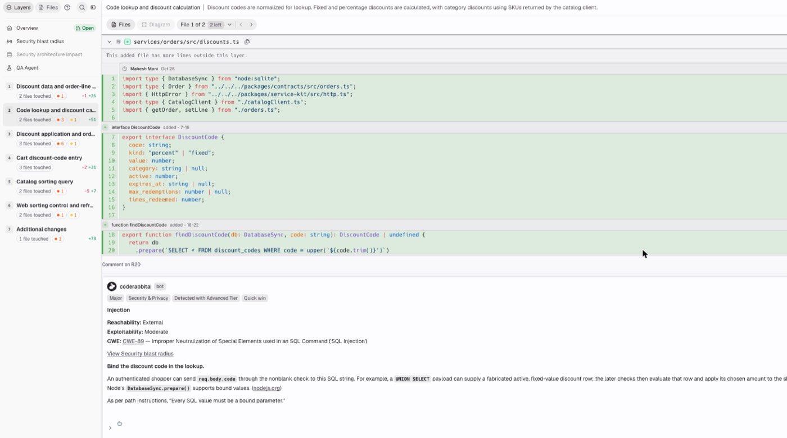
F1 in Change Stack layer 2.
STEP 14F1 Security Blast Radius
DoFrom the F1 comment, click View Security blast radius. Select the highlighted lookup component.
Say"The vulnerable line is the start. Which components does it reach? The lookup feeds discount application and checkout reservation."
See7 changed, 3 upstream, 1 downstream, 1 potentially impacted; the F1 panel on the right with evidence.
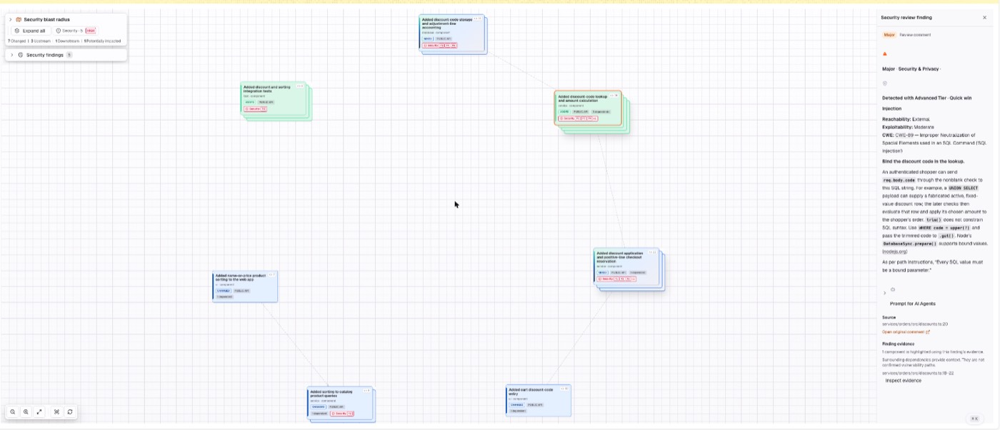
Security Blast Radius graph for F1.
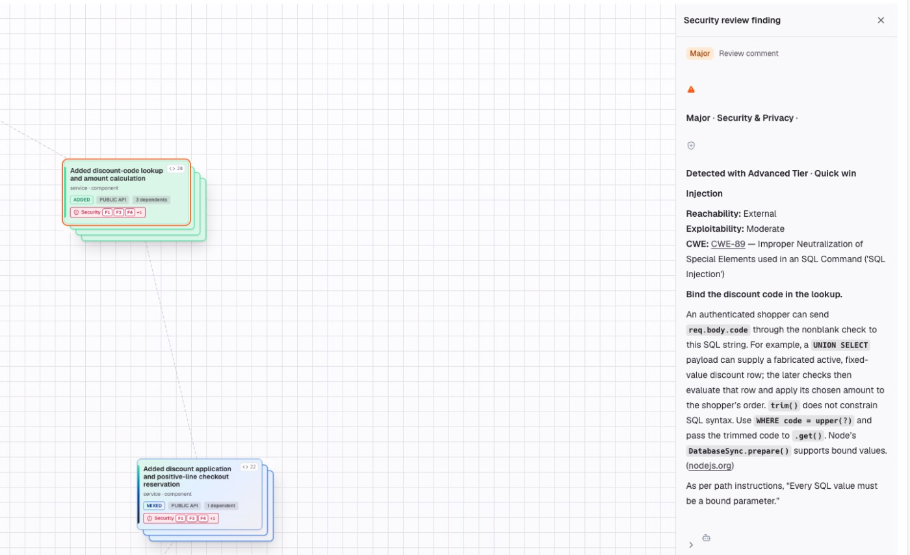
F1 selected: highlighted component and finding detail.
STEP 15F1F2 Security architecture impact
DoClick Security architecture impact in the rail. Then, on GitHub, expand Security architecture risk in the summary.
Say"Architecture view: customer input now crosses from the gateway into SQL in two services, and discount application is a new component writing order state. Both of our findings are listed as retained high concerns."
SeeBoundaries for web, gateway, catalog, orders, and the orders database; overall impact High risk. Retained concerns: SQL from shopper code (F1); negative and double-counted totals (F2).
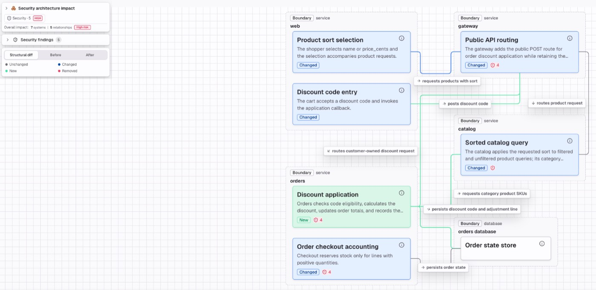
Security architecture impact in Change Stack.
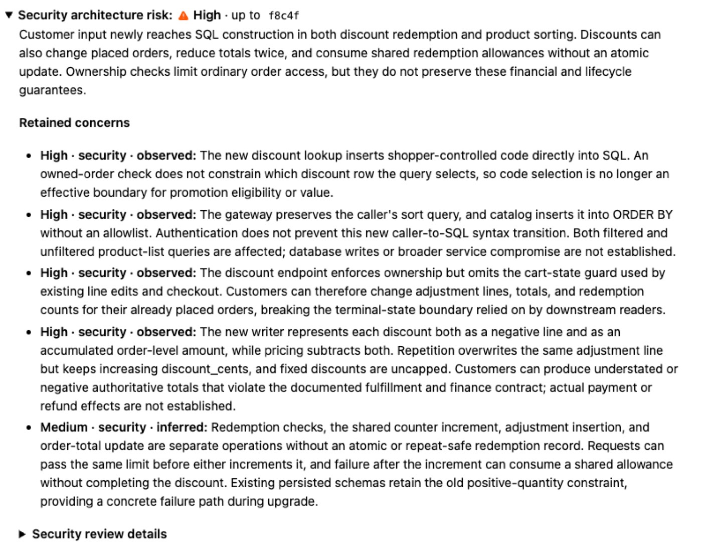
Security architecture risk in the PR summary.
Stage 4 · QA Agent
The QA Agent ran against the deployed demo environment on commit e7a13a2: 5 scenarios, 11 bugs, 16 m 56 s. All five scenarios failed. The two below carry F1 and F2.
STEP 16Run the QA Agent on PR #3
DoOn PR #3, comment @coderabbitai test (or open QA Agent in Change Stack and click Run current plan). For the prepared demo, open the existing run from the PR comment's Review Evidence button.
Say"Findings are claims. The QA Agent turns them into tests, runs them against the running app, and keeps the evidence."
See"At least one QA scenario demonstrated a regression." Run failed · 5 of 5 scenarios · 11 bugs, with testing limits stated plainly.
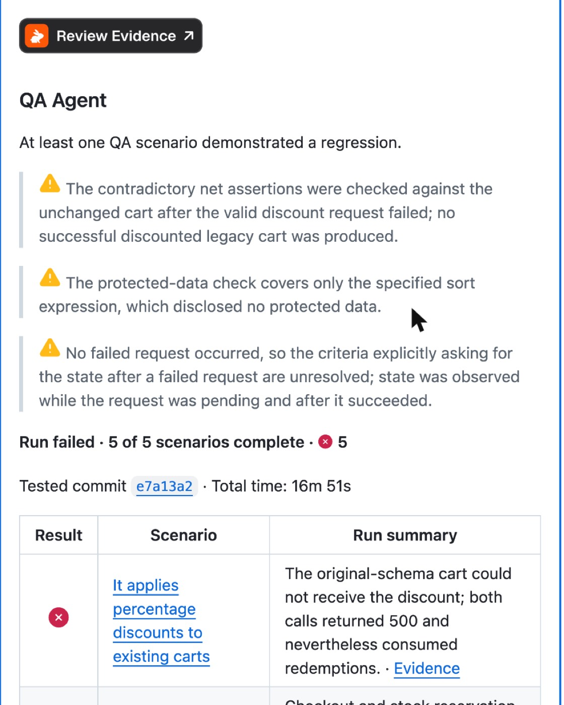
QA Agent result on the PR.
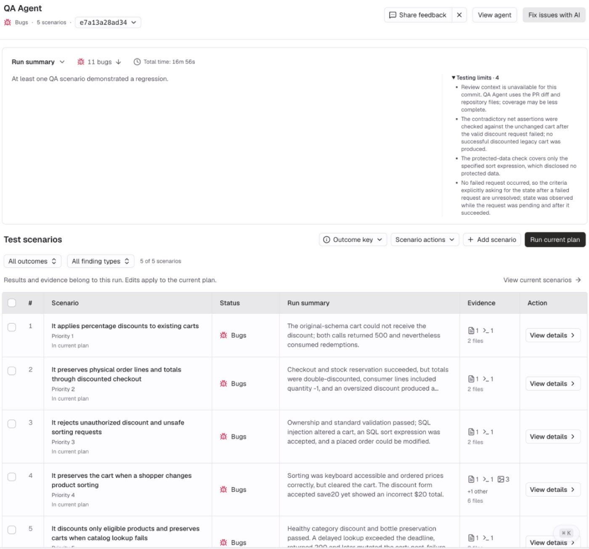
The run in Change Stack: five scenarios, each with evidence.
STEP 17F2 The money bug, proven in the running app
DoOpen scenario 2, It preserves physical order lines and totals through discounted checkout. Show Evidence, then Checks → Failed.
Say"Checkout worked — and that is the problem. The hoodie cart reports a 4,000-cent subtotal instead of 6,000, the fulfillment consumer receives a quantity of minus one, and the mug cart nets minus $25."
SeeObserved: "Discounted cart reported subtotal 4000 rather than 6000." "The mug cart net was -2500, below zero." Execution log linked to each check.
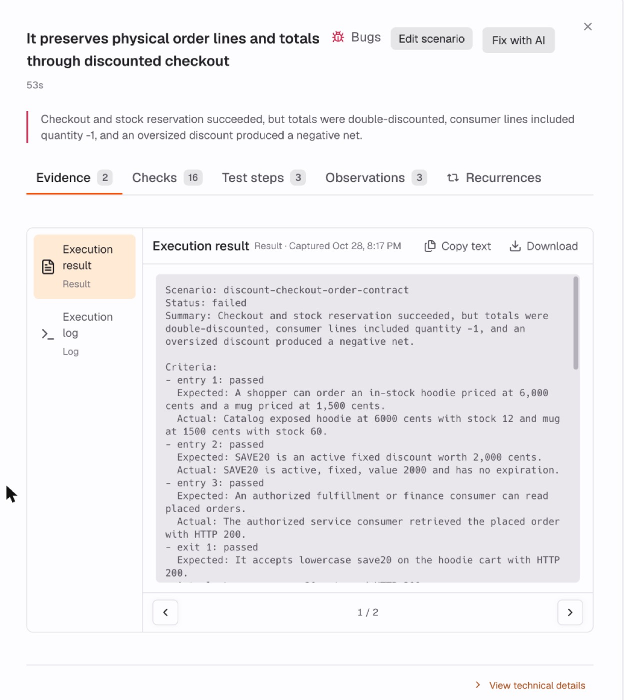
Scenario 2 evidence: execution result.
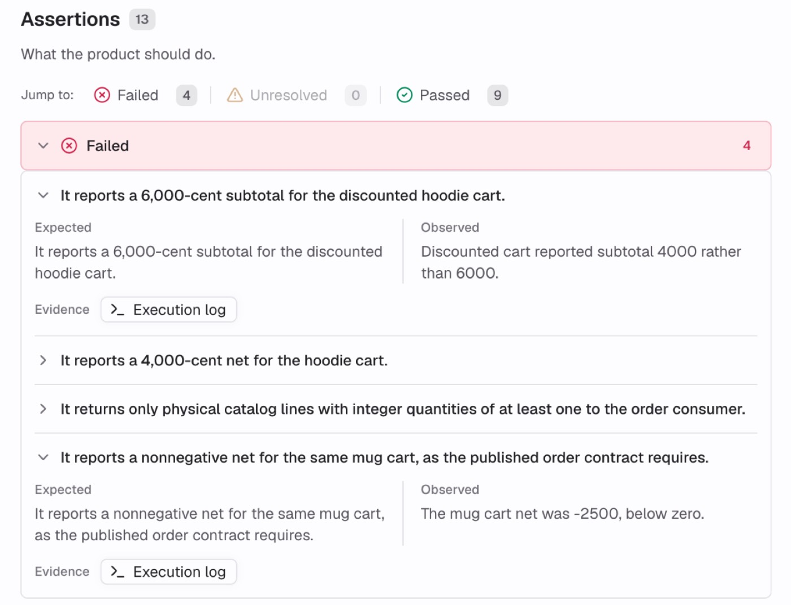
Scenario 2 failed checks: double-counted subtotal and negative net.
STEP 18F1 The injection, exploited in the running app
DoOpen scenario 3, It rejects unauthorized discount and unsafe sorting requests. Show Checks → Failed.
Say"This is F1 with proof. An injected code was accepted and applied someone else's discount. Same scenario: the SQL sort expression was accepted and a placed order was changed."
SeeObserved: "Injected code returned 200 and applied WELCOME10 for 600 cents." 7 failed assertions, each with an execution log.
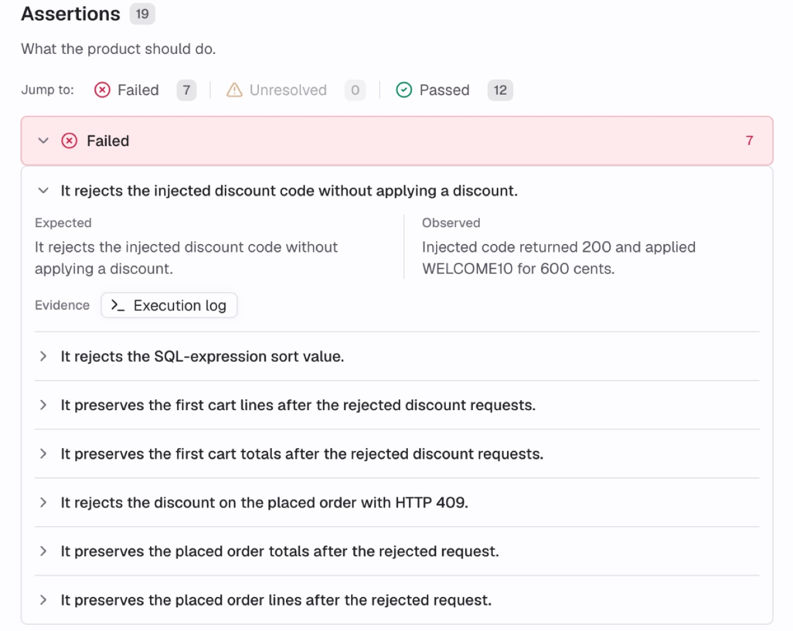
Scenario 3 failed checks: the injected code was accepted.
WOW The same two findings from the CLI are now reproduced against the running application, with expected versus observed values and execution logs.
Stage 5 · Application Security: Deep Scan
Deep Scan 2b10cbc0 of agent/discount-codes, October 28, 2026: 10 findings (1 high, 5 medium, 4 low). Scan the agent branch, not main: main holds the corrected code and does not contain F1.
STEP 19F1 Deep Scan ranks the same injection highest
DoOpen CodeRabbit Security → Repositories → mmani-demo-prs → Findings, with the agent-branch scan selected. Do not start a new scan during the demo.
Say"The security team doesn't read PRs. They scan the repository — and the one High finding is the same line we started with on my laptop."
SeeInjection · CWE-89 · High · services/orders/src/discounts.ts:20. Also F2 as CWE-682 at discounts.ts:66, the negative discount line.
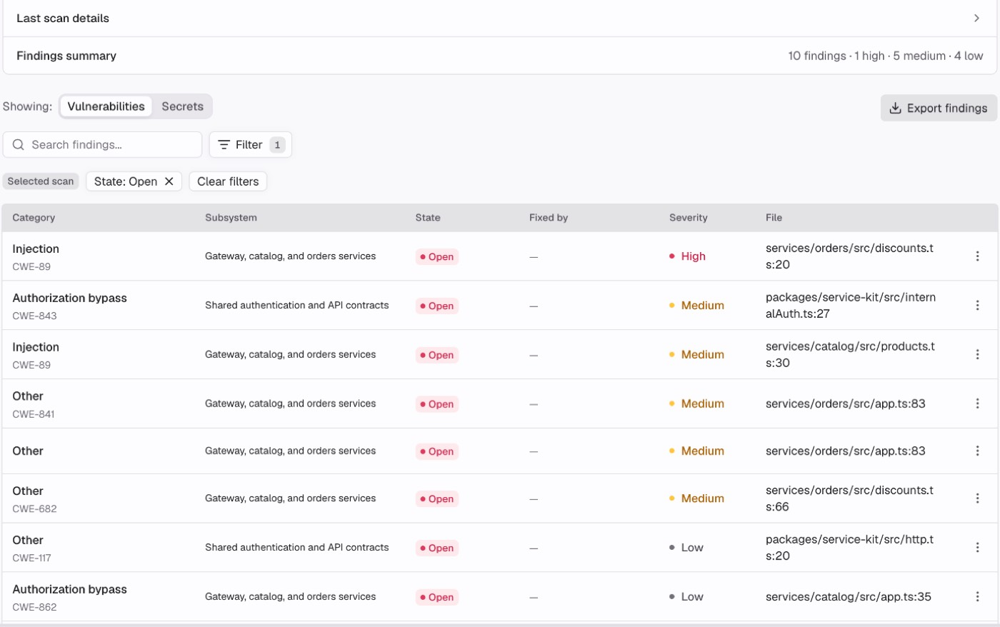
Deep Scan findings for the agent branch.
STEP 20F1 Reachability from the public route to the sink
DoSelect the High injection finding. Scroll to Reachability.
Say"It traces the attack path: the public discount route on the gateway, the orders handler, the interpolated lookup, and where the attacker-selected discount gets written."
F1 in Deep Scan: CWE, reachability, and evidence path.
Stage 6 · QA user journeys: same tests, two branches
The QA Agent mapped nine critical user journeys from the repository's source and saved them as a reusable library under Testing → Test suites → mmani-demo-prs. The same library runs against any branch.
STEP 21Map the journey library with an agent
DoOpen Testing → Test suites → mmani-demo-prs → User journeys. For a new repo, click Map with an Agent, review the proposal, and reply "Apply all nine journeys."
Say"PR testing checks one change. Journeys check the product: browsing, carts, discounts, checkout, stock, privacy, and the fulfillment handoff — written once, run on every branch."
SeeNine journeys, each with a user, a goal, test steps, and assertions grounded in the source.
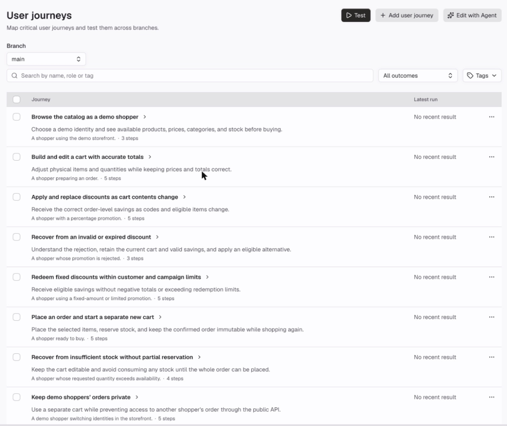
The journey library for mmani-demo-prs.
STEP 22Baseline: all nine pass on main
DoSet Branch to main. Show the latest run.
Say"On main — the corrected discount code — every journey passes. That is our baseline."
SeeAll nine journeys Passed (run of Oct 28, 9:09 PM, commit 43b4219).
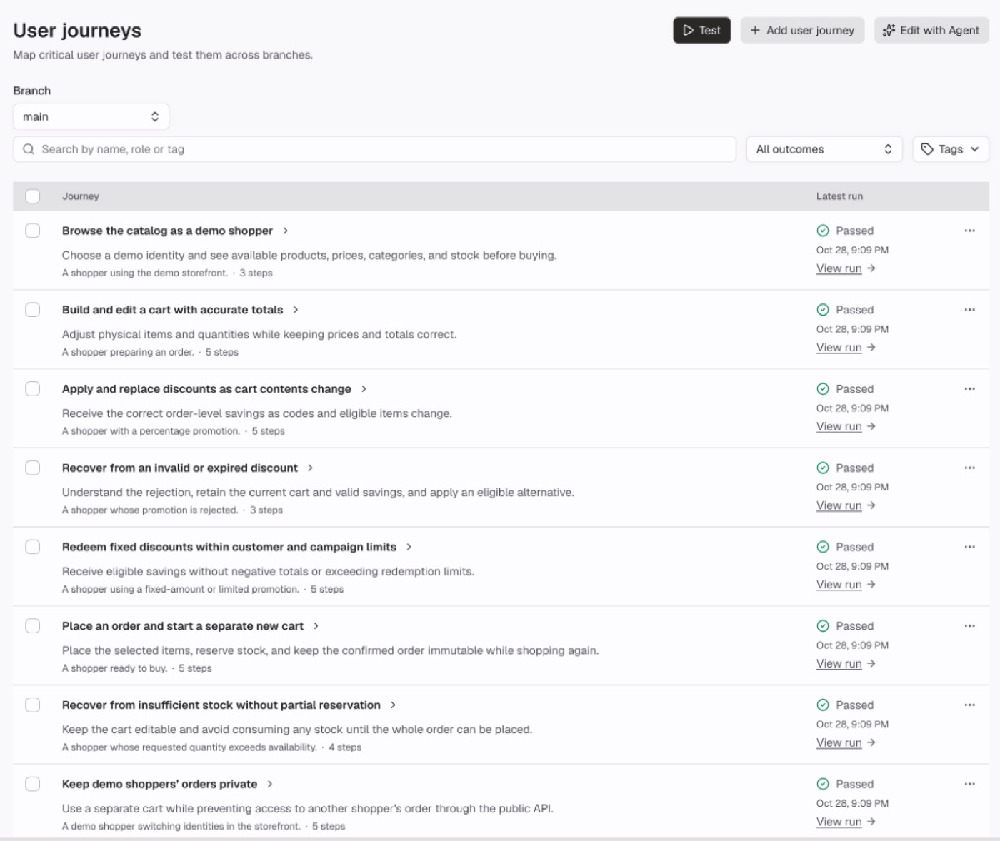
All journeys pass on main.
STEP 23F2 Same journeys on the agent branch: five fail
DoSet Branch to agent/discount-codes. Click Test, keep all nine journeys, and run (or show the existing run).
Say"Nothing about the tests changed — only the branch. Five journeys now fail, and every failure is about discounts."
SeeBugs on: apply and replace discounts; recover from an invalid or expired discount; redeem fixed discounts; place an order; fulfillment and finance handoff. Browsing, cart editing, stock recovery, and privacy still pass.
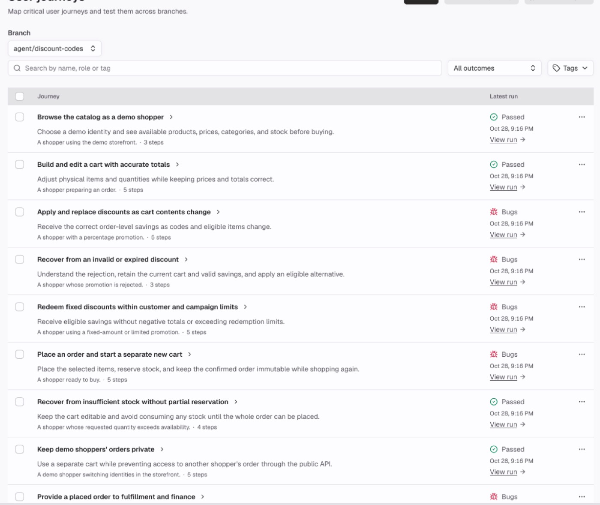
The same nine journeys on agent/discount-codes (run of Oct 28, 9:16 PM).
STEP 24F2 Journey evidence: negative totals and a broken handoff
DoOpen Redeem fixed discounts within customer and campaign limits → View run, and open its storefront screenshot. Then open Provide a placed order to fulfillment and finance.
Say"Here is what a shopper actually sees: a $15 mug, a $20 code, and a total of minus $25. And the order the warehouse receives has a line with quantity minus one."
See"SAVE20 on a $15 mug produced a −$25 total." "Discounts were deducted twice from totals." Storefront: Subtotal −$5.00, Discount −$20.00, Total −$25.00. Fulfillment: "a synthetic line with quantity −1 … a $52.00 net instead of $58.50."
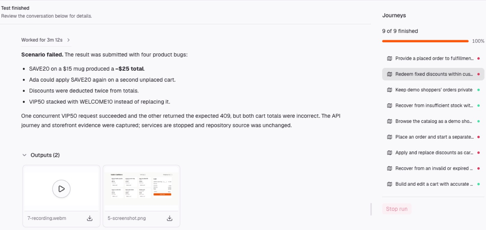
Fixed-discount journey: four product bugs, with recording and screenshot.
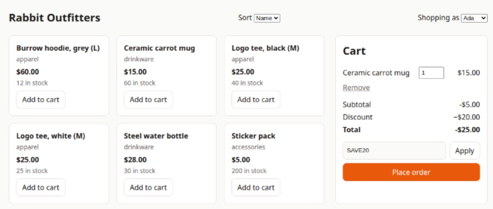
The storefront during the journey: a −$25.00 total.
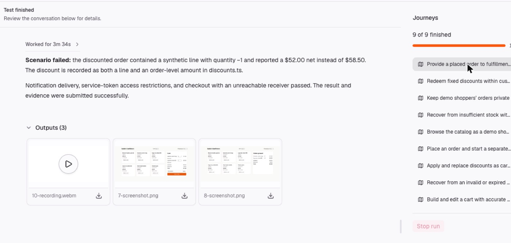
Fulfillment handoff journey: quantity −1 line and a double-counted net.
WOW One journey library, written once from the source. On main it is green; on the agent branch it reproduces F2 from the shopper's screen to the warehouse's order feed.
The line that lands "One ticket, one agent, two mistakes — and every stop saw them: my laptop, the PR, the reviewer's queue, the architecture view, the test run, and the security scan. Nothing reached main."
Scenario 3: injected code returned 200 and applied WELCOME10
Scenario 2: subtotal 4,000 vs 6,000; mug net −2,500; consumer line quantity −1
User journeys
—
5 of 9 journeys fail on the agent branch (all pass on main): −$25.00 storefront total; quantity −1 in the fulfillment feed
Deep Scan
High, CWE-89, discounts.ts:20, reachable from the gateway route
Medium, CWE-682, discounts.ts:66
Objection handling
Objection
Response
"Our tests pass, so it's fine."
The agent's tests assert −$25.00 and $52.00. Show the Success Criteria check: it requires tests that assert the values in the ticket.
"We already run SAST."
Keep it. F2 is not a SAST finding: it needs the ticket, the org's money rules, and the consumer repo to recognize.
"Does the check block the merge?"
The checks report errors. Branch protection must separately require them.
"Is the consumer actually deployed against this app?"
No. The verified moment is CodeRabbit reading the consumer's code and naming the broken call sites.
Freshness check before every demo
PR #3 is open, unmerged, labeled Demo - Do not merge; F1 and F2 threads are unresolved.
The PR summary still shows Pre-merge checks with Success Criteria graded against SC-10.
The Blast Radius link on the F1 comment opens the graph (use the comment's link; the bare Change Stack tab may say it was not generated for the latest run).
Locally: branch agent/discount-codes and base demo/agent-base exist.
Do not push to agent/discount-codes; every push triggers a new review.
Deep Scan: show scan 2b10cbc0 (agent branch). A scan of main does not contain F1.
Appendix C — Local setup for the CLI and VS Code demos
Steps 3 and 4 review the coding agent's branch on your laptop. The branch must be checked out, and the review must compare it against the commit the agent started from — not main, which now holds the corrected reference implementation. Run every command from a terminal; nothing here pushes or changes the shared repository.
1. Prerequisites
Git and GitHub access to coderabbit-demo/mmani-demo-prs (public).
CodeRabbit CLI installed (see docs.coderabbit.ai/cli) and VS Code with the CodeRabbit extension.
Signed in to the coderabbit-demo organization in both.
coderabbit auth login
coderabbit auth status # Account and organization
coderabbit auth org # switch to coderabbit-demo if needed
coderabbit doctor # checks the CLI is ready for local reviews
code --install-extension coderabbit.coderabbit-vscode
2. Clone the repository and check out the agent's branch
cd ~/projects
git clone https://github.com/coderabbit-demo/mmani-demo-prs.git
cd mmani-demo-prs
git switch agent/discount-codes
git log --oneline -1 # expect: e7a13a2 Merge branch 'main' into agent/discount-codes
Already cloned? Run git fetch origin and then git switch agent/discount-codes && git pull --ff-only.
3. Create the comparison base
The base is the commit where the agent's branch and main last met. Create a local branch for it so both tools can select it by name.